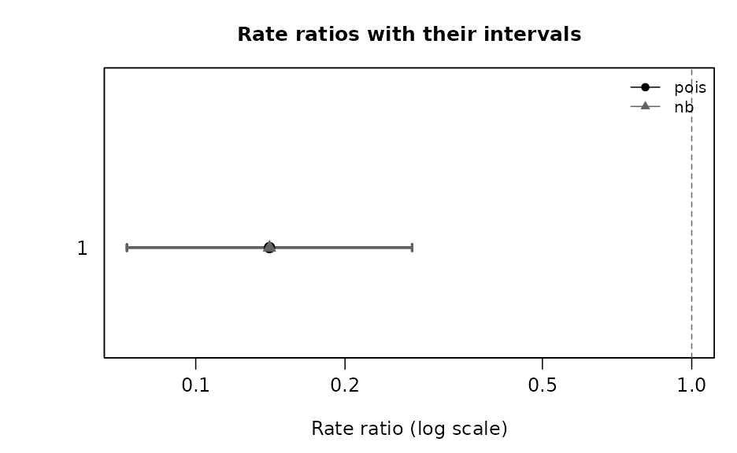

Learners, presets and data larger than memory
Source:vignettes/learning-and-presets.Rmd
learning-and-presets.RmdPenalised regression and forests written in the package, checks before a model is fitted, and summaries of data read in one pass.
Each section is one help page: what the function is for, the example
of its help page as it runs, and the plot of its result where the
package draws one. ?name gives the arguments and the value
in full.
Learning
Elastic net by coordinate descent, with cross-validation
enpath(): Fits the lasso, ridge and elastic net path by
cyclical coordinate descent, for a numeric (gaussian) or a 0/1
(binomial) outcome, and cross-validates it over folds the caller
supplies. The objective, the standardisation of the columns and the
scale of lambda are those of ‘glmnet’, so that with the
same lambda and the same folds the two give the same
coefficients, up to their convergence thresholds: the gaussian family
minimises (1 / 2n) |y - a0 - x b|^2 + lambda pen(b), the binomial family
the mean negative log-likelihood plus lambda pen(b), with pen(b) =
sum((1 - alpha) / 2 (s b)^2 + alpha |s b|), s the
population standard deviations of the columns. For the gaussian family
the outcome is scaled to unit variance while fitting, as ‘glmnet’ does.
The intercept is never penalised; a constant column keeps a zero
coefficient.
Logistic regression
lgtreg(): Maximum likelihood for a 0/1 outcome and a
logit link, by Newton’s method on the design with centred columns, the
method glm() uses with family = binomial()
when the columns are not collinear. Standard errors come from the
inverse Fisher information.
Random forest for regression and probabilities
rfor(): Grows a random forest (Breiman 2001) on
x and y and returns its mean prediction at the
rows of newx and its out-of-bag prediction at each row of
x. Each tree is grown on a bag of rows drawn from
x, as deep as minnode allows, choosing at each
node the best of mtry columns drawn at random by the
reduction in the sum of squares; for a 0/1 outcome this is the Gini
split, and the forest’s mean is a probability, as in a probability
forest of ‘ranger’.
Stacking: the super learner
suplrn(): Combines the learners of the package (least
squares or logistic regression, the elastic net of
enpath(), the random forest of rfor()) into
one predictor by stacking (van der Laan, Polley and Hubbard 2007). Each
learner is fitted K times, on the rows outside each fold, and predicts
the fold left out; the meta-weights are the non-negative least squares
fit of y on these cross-fitted predictions, scaled to sum
to 1 (the method.NNLS of ‘SuperLearner’). With
disc = TRUE the stack is the discrete super learner: the
one learner of least cross-validated risk. The predictions are then the
weighted sum of the learners fitted on all the rows. Everything, the
folds included, is computed in the compiled core and is the same for the
same seed; with one learner the stack is that learner, bit
for bit.
Presets
Presets: a published dataset’s columns onto a generic function’s arguments
clprep(): A preset says how the columns of one published
dataset (an Ontario segregation table, the Special Investigations Unit’s
cases, a use-of-force file) feed the arguments of one of crimlab’s
generic functions, so that generic(clprep(data, preset))
gives the published analysis while the same generic runs on anyone’s
data given as plain vectors. A preset describes a layout and ships no
data: the user supplies the table. The columns a preset reads, as
clprep() lists them, are the layout a table needs (what a
zero-row template would hold); prechk() checks a table
against them.
head(clprep())
#> preset generic args
#> 1 otis-b03-cnt cntreg y grp adj clus gee
#> 2 otis-b04-cnt cntreg y grp adj
#> 3 otis-b06-cnt cntreg y grp adj clus gee
#> 4 otis-b07-cnt cntreg recipe y grp adj
#> 5 otis-b08-cnt cntreg y grp adj clus gee
#> 6 otis-b09-cnt cntreg y grp adj
#> source
#> 1 Ontario Ministry of the Solicitor General, segregation and restrictive confinement data (Ontario Data Catalogue), table b03
#> 2 Ontario Ministry of the Solicitor General, segregation and restrictive confinement data (Ontario Data Catalogue), table b04
#> 3 Ontario Ministry of the Solicitor General, segregation and restrictive confinement data (Ontario Data Catalogue), table b06
#> 4 Ontario Ministry of the Solicitor General, segregation and restrictive confinement data (Ontario Data Catalogue), table b07
#> 5 Ontario Ministry of the Solicitor General, segregation and restrictive confinement data (Ontario Data Catalogue), table b08
#> 6 Ontario Ministry of the Solicitor General, segregation and restrictive confinement data (Ontario Data Catalogue), table b09
# a table laid out as the published OTIS c01 table (numbers made up)
d <- data.frame(EndFiscalYear = rep(2020:2022, each = 2),
Gender = rep(c("Female", "Male"), 3),
NumberIndividuals_RestrictiveConfinement =
c(40, 310, 52, 335, 47, 360))
p <- clprep(d, "otis-c01-cnt")
cntreg(p)
#> cntreg: 6 counts; reference 0
#> rate ratios (95% intervals):
#> fit term irr lo hi p sep
#> pois 1 0.1383085 0.1158296 0.1651497 6.153279e-106 FALSE
#> nb 1 0.1383085 0.1158295 0.1651499 6.174131e-106 FALSE
#> negative binomial theta 7655874; AIC Poisson 48.8636, negative binomial 50.86374
# the same model on plain vectors
cntreg(d$NumberIndividuals_RestrictiveConfinement, d$Gender == "Female",
adj = factor(d$EndFiscalYear))
#> cntreg: 6 counts; reference FALSE
#> rate ratios (95% intervals):
#> fit term irr lo hi p sep
#> pois TRUE 0.1383085 0.1158296 0.1651497 6.153279e-106 FALSE
#> nb TRUE 0.1383085 0.1158295 0.1651499 6.174131e-106 FALSE
#> negative binomial theta 7655874; AIC Poisson 48.8636, negative binomial 50.86374
# a preset of one's own, for another agency's columns
mine <- data.frame(preset = "my-cnt", generic = "cntreg",
arg = c("y", "grp", "adj"),
column = c("count", "sex", "year"),
recode = c("", "f=1;*=0", "fac"))
e <- data.frame(count = c(4, 30, 6, 41), sex = c("f", "m", "f", "m"),
year = c(1, 1, 2, 2))
cntreg(clprep(e, mine))
#> cntreg: 4 counts; reference 0
#> rate ratios (95% intervals):
#> fit term irr lo hi p sep
#> pois 1 0.1408451 0.07265014 0.2730529 6.508047e-09 FALSE
#> nb 1 0.1408451 0.07265012 0.2730530 6.508134e-09 FALSE
#> negative binomial theta 19720034; AIC Poisson 23.74163, negative binomial 25.74164
Check a table against a preset before use
prechk(): prechk() reads a table the way
clprep() would under a preset and reports, in one error,
every problem that would stop it or quietly change its result: the
columns the preset reads (directly, in a filter or in a recipe) that the
table lacks, the labels of a column outside the codes the publisher
lists for it, and the labels a mapping recode with no *
rule does not cover. A table that passes is returned unchanged, so the
check can sit in front of the call:
clprep(prechk(d, p), p).
# a table laid out as the published OTIS b03 table, simulated
d <- data.frame(
EndFiscalYear = rep(2021:2022, each = 4),
Region_AtTimeOfPlacement = rep(c("Central", "Toronto"), 4),
Institution_AtTimeOfPlacement = rep(c("Quinte Detention Centre",
"Toronto South Detention Centre"),
4),
Alert_Type = "Mental Health Alert",
Alert_Presence = rep(c("Yes", "Yes", "No", "No"), 2),
Number_SegregationPlacements = c(31, 52, 140, 260, 28, 61, 133, 248)
)
prechk(d, "otis-b03-cnt")
# a region the publisher does not list, and a column missing
bad <- d[-6]
bad$Region_AtTimeOfPlacement[1] <- "Southern"
try(prechk(bad, "otis-b03-cnt"))
#> Error : prechk: the table does not fit preset otis-b03-cnt:
#> * `data` has no column Number_SegregationPlacements.
#> * column Region_AtTimeOfPlacement has labels not among its codes: Southern.
# a preset of one's own, and a label its recode does not cover
mine <- data.frame(preset = "my-cnt", generic = "cntreg",
arg = c("y", "grp"), column = c("count", "sex"),
recode = c("", "f=1;m=0"))
e <- data.frame(count = c(4, 30, 6, 41), sex = c("f", "m", "f", "x"))
try(prechk(e, mine))
#> Error : prechk: the table does not fit preset my-cnt:
#> * column sex has labels with no recode: x.Synthetic example data in the shape of published tables
synfix(): Draws a data frame with the columns of a
published administrative table and values of the kinds it holds, for
examples, tests and teaching where the real table cannot be shipped or
fetched. Each column is drawn on its own, uniformly from its values:
nothing in the result is a record of anyone, and no relation between
columns is kept.
head(synfix("otis-b02", n = 20, seed = 3))
#> EndFiscalYear UniqueIndividual_ID Gender Region_MostRecentPlacement Age_Category
#> 1 2022 syn-00002 Female Toronto 50+
#> 2 2019 syn-00001 Female Central 18 to 24
#> 3 2021 syn-00004 Female Western 18 to 24
#> 4 2024 syn-00004 Female Eastern 25 to 49
#> 5 2021 syn-00003 Male Western 50+
#> 6 2019 syn-00002 Male Eastern 18 to 24
#> TotalAggregatedDays_Segregation
#> 1 57
#> 2 76
#> 3 8
#> 4 49
#> 5 54
#> 6 44
x <- synfix("cuof", n = 5)
names(x)
#> [1] "incidents" "incident_type" "indigenous"
#> [4] "inmate_incident" "inmate_participant" "institution_summary"
#> [7] "location_summary" "race" "ethnic_origin"
#> [10] "religion" "select_incident_summary" "staff_incident"
synfix(list(year = 2019:2023, sex = c("F", "M")), n = 4, seed = 9)
#> year sex
#> 1 2021 F
#> 2 2023 M
#> 3 2021 M
#> 4 2021 F
head(synfix())
#> kind column type values
#> 1 otis-a01 EndFiscalYear range 2018|2024
#> 2 otis-a01 UniqueIndividual_ID id
#> 3 otis-a01 Region_AtTimeOfPlacement labels Central|Eastern|Northern|Toronto|Western
#> 4 otis-a01 Region_MostRecentPlacement labels Central|Eastern|Northern|Toronto|Western
#> 5 otis-a01 Gender labels Female|Male
#> 6 otis-a01 Age_Category labels 18 to 24|25 to 49|50+Data larger than memory
Summary statistics accumulated in blocks
onlsmry(), smryupd(),
smrymrg(), smrystat(): An accumulator for the
count, mean, variance, skewness and kurtosis of a numeric column that
does not fit in memory, or that arrives in pieces (a file read in
chunks, results from several machines). Start one with
onlsmry(), feed it blocks with smryupd(),
combine two with smrymrg() and read the result with
smrystat().
set.seed(1)
x <- stats::rnorm(1000) # simulated
# accumulate in blocks of 100
acc <- onlsmry()
for (i in seq(1, 1000, by = 100)) acc <- smryupd(acc, x[i:(i + 99)])
smrystat(acc)
#> n mean variance sd skewness kurtosis
#> 1.000000e+03 -1.164814e-02 1.071051e+00 1.034916e+00 -1.916710e-02 -1.775465e-03
all.equal(smrystat(acc)[["variance"]], stats::var(x))
#> [1] TRUE
# two accumulators built independently can be merged
a <- smryupd(onlsmry(), x[1:400])
b <- smryupd(onlsmry(), x[401:1000])
all.equal(smrystat(smrymrg(a, b)), smrystat(acc))
#> [1] TRUE
# an empty accumulator reports nothing rather than zero
smrystat(onlsmry())
#> n mean variance sd skewness kurtosis
#> 0 NaN NaN NaN NaN NaN
try(onlsmry(c("a", "b")))
#> Error : onlsmry: `x` must be numeric, not text such as "a".Uniform sample of a stream in one pass
rsvidx(), rsvsmp(): Vitter’s Algorithm R:
draws k items from a stream, each item equally likely to be
retained, in a single pass and using memory proportional to
k rather than to the stream’s length. rsvidx()
returns the retained positions, so the same sample can be applied to a
file read line by line; rsvsmp() applies it to a vector in
memory.
rsvidx(1000, 5, seed = 1)
#> [1] 33 67 304 630 638
rsvsmp(letters, 4, seed = 2)
#> [1] "m" "r" "s" "z"
rsvidx(3, 10)
#> [1] 1 2 3
# sample rows of a data frame
df <- data.frame(id = 1:20, v = (1:20)^2)
df[rsvidx(nrow(df), 3, seed = 7), ]
#> id v
#> 3 3 9
#> 8 8 64
#> 9 9 81
try(rsvidx(10, -1))
#> Error : rsvidx: `k` must be a single non-negative whole number.Distinct-value count in fixed memory
dstnskch(), dstncnt(),
skchmrg(): HyperLogLog: estimates how many distinct values
a column holds using a fixed register per bucket, regardless of the
column’s length or cardinality. dstnskch() builds or
extends the registers, dstncnt() turns them into an
estimate, and skchmrg() combines two sketches.
set.seed(1)
x <- sample(1:5000, 200000, replace = TRUE) # simulated
dstncnt(dstnskch(x))
#> [1] 5039.269
length(unique(x))
#> [1] 5000
dstncnt(dstnskch(c("a", "b", "c", "a", "b")))
#> [1] 3.000275
a <- dstnskch(x[1:100000])
b <- dstnskch(x[100001:200000])
dstncnt(skchmrg(a, b))
#> [1] 5039.269
try(skchmrg(dstnskch(1:10, p = 4), dstnskch(1:10, p = 5)))
#> Error : skchmrg: both sketches must have the same number of registers.